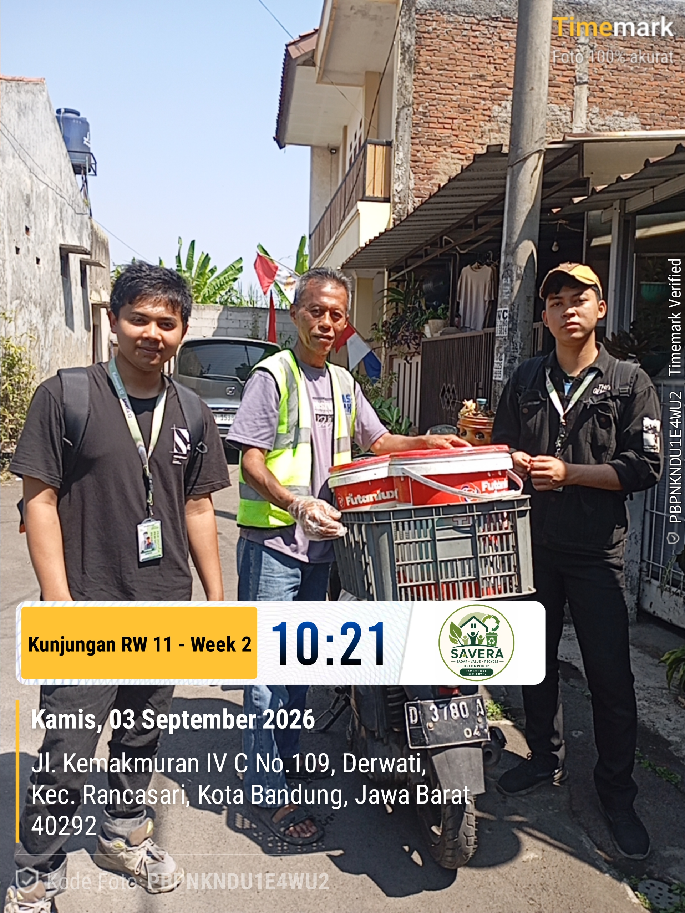
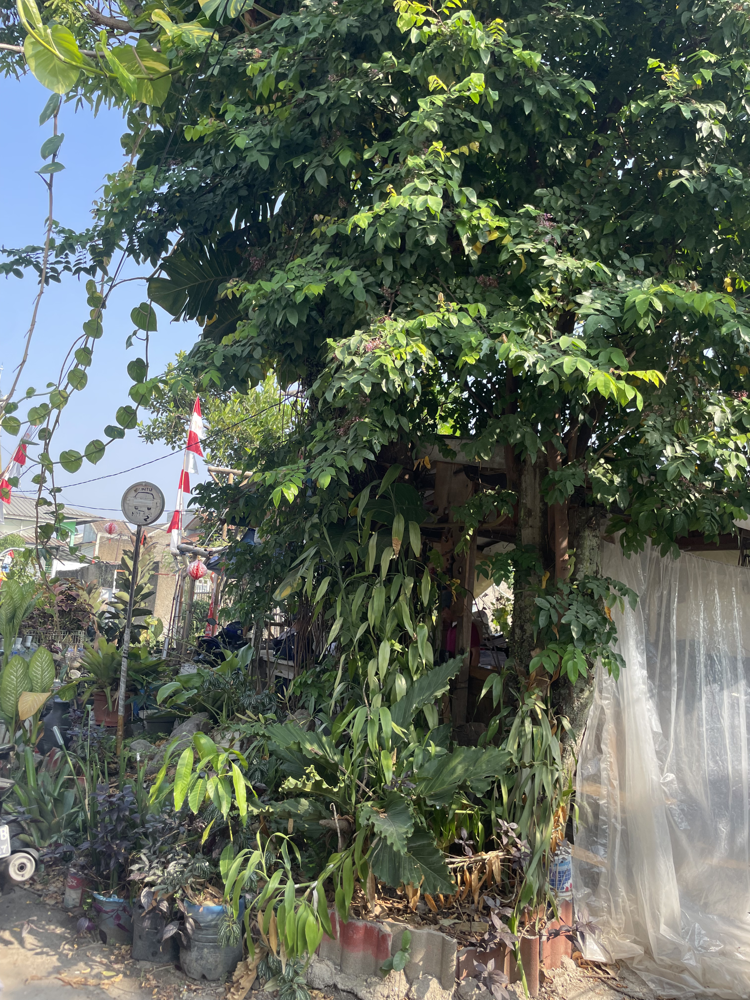
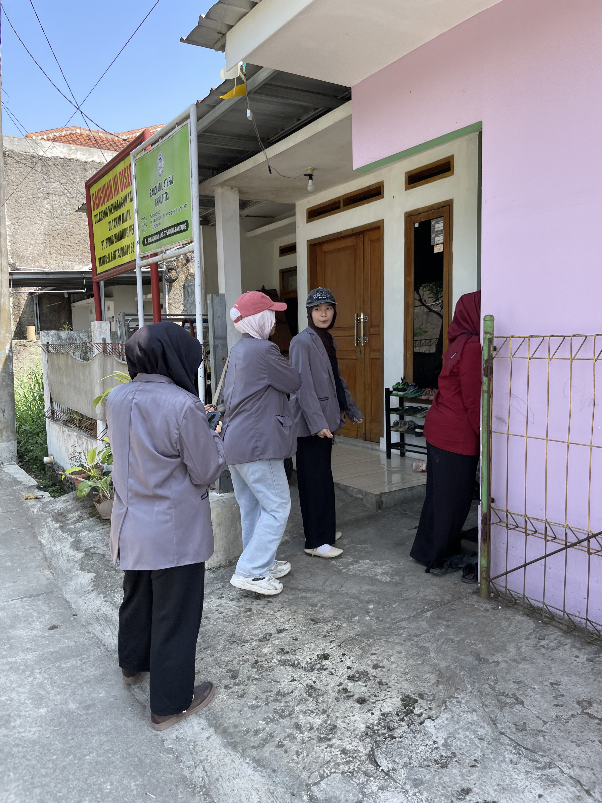
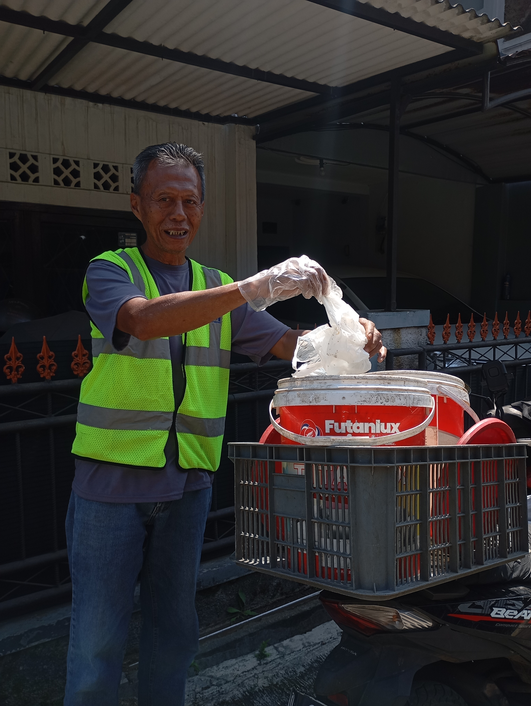
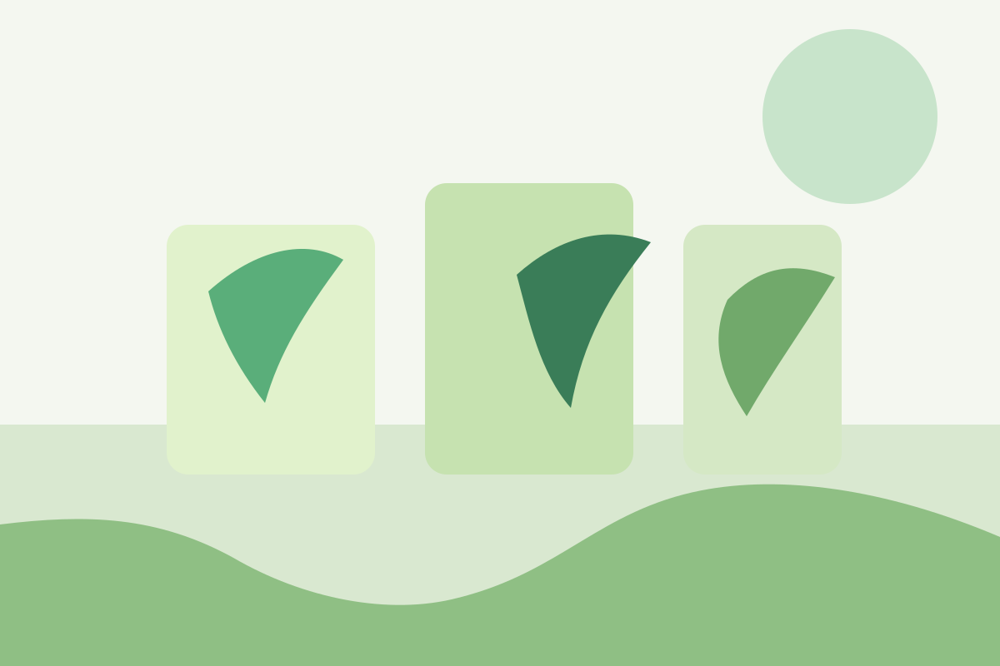
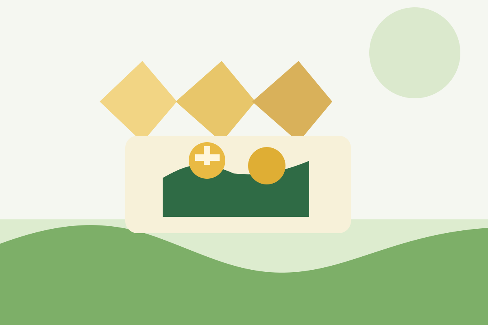
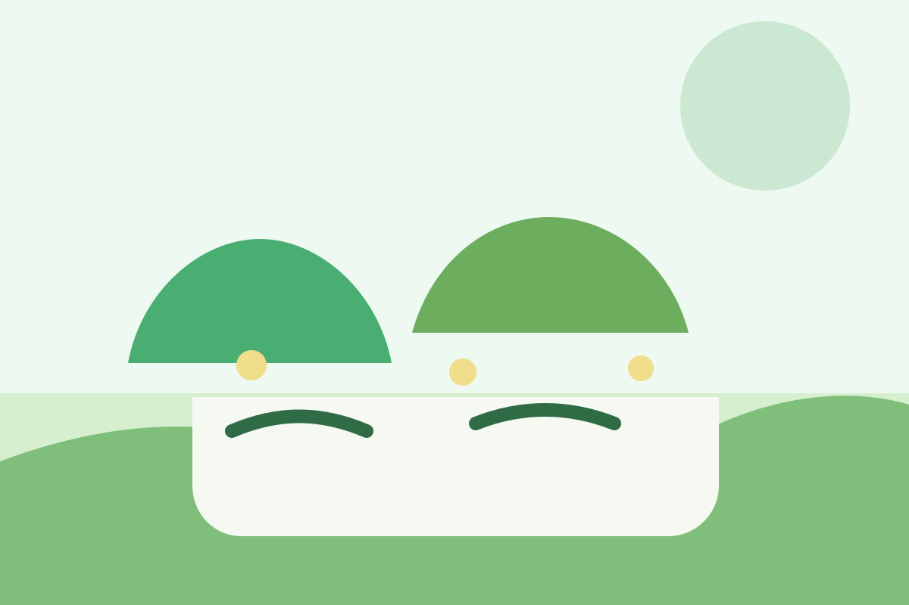
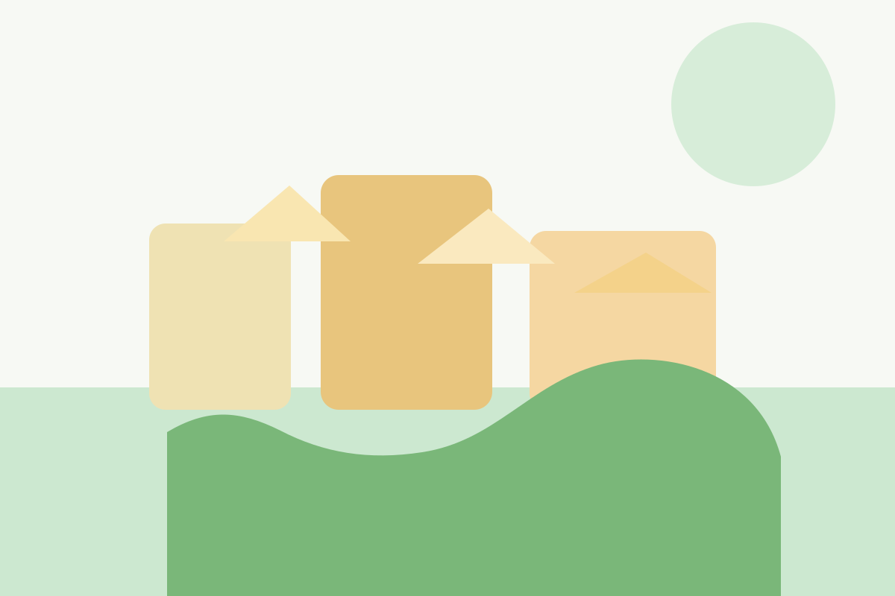
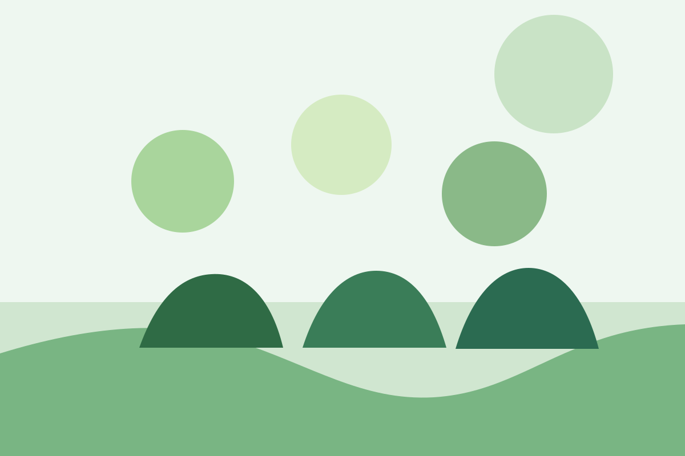

Kegiatan Bersih-bersih
Lingkungan · 9 foto
Dokumentasi kegiatan warga yang sarat makna, kebersamaan, kebersihan, dan kreativitas.

Lingkungan · 9 foto

Lingkungan · 3 foto

PKK · 4 foto

Bank Sampah · 8 foto

Lingkungan

Lingkungan

Lingkungan

PKK

Lingkungan